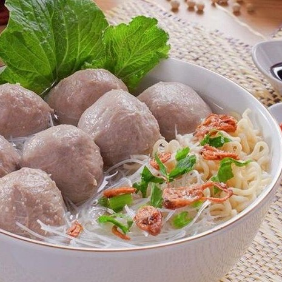

Menu Makanan dan Minuman
Makanan
-
 Nasi Goreng
Nasi GorengHarga: Rp 10.000
Nasi goreng adalah hidangan Indonesia yang terdiri dari nasi yang digoreng dalam minyak atau margarin, biasanya bersama dengan bumbu-bumbu seperti bawang putih, bawang merah, cabai, kecap manis, dan bumbu-bumbu lainnya. Nasi goreng juga diberi tambahan daging, seafood, telur, atau sayuran seperti wortel, kacang polong, dan kubis.
Jumlah >
-
Soto
Harga: Rp 8.000
Soto adalah salah satu jenis makanan khas Indonesia yang berupa sup dengan bahan dasar kaldu yang kaya rasa, biasanya dihidangkan dengan potongan daging sapi, ayam, atau kambing, serta tambahan bahan seperti telur rebus, kentang, tauge, daun bawang, seledri, bawang goreng, dan kerupuk.
Jumlah >
-
 Tahu Tek
Tahu TekHarga: Rp 8.000
Tahu Tek adalah makanan khas dari Surabaya, Jawa Timur, Indonesia. Hidangan ini terdiri dari tahu goreng yang diiris tipis, dicampur dengan lontong (nasi ketan yang dibungkus dalam daun pisang dan direbus), tauge, dan mentimun, kemudian disiram dengan saus kacang yang kental dan bumbu petis (saus fermentasi udang).
Jumlah >
-
 Lalapan Ayam
Lalapan AyamHarga: Rp 12.000
Lalapan ayam adalah hidangan Indonesia yang terdiri dari potongan ayam goreng yang disajikan dengan sayuran mentah atau direbus seperti timun, tomat, kol, kangkung, dan selada. Lalapan ayam sering kali disajikan dengan sambal dan kecap sebagai pelengkap, serta nasi putih. Hidangan ini sangat populer di Indonesia.
Jumlah >
-

Bakso
Harga: Rp 8.000
Bakso adalah salah satu makanan yang sangat populer di Indonesia. Ini adalah semacam bola daging yang terbuat dari campuran daging sapi giling yang dicampur dengan tepung tapioka, bawang putih, bawang merah, garam, dan beberapa bumbu lainnya. Disajikan dalam sup kaldu bersama dengan mie, tauge, irisan bakso, dan kadang-kadang tambahan seperti pangsit, telur rebus, atau sayuran.
Jumlah >
-
Sate
Harga: Rp 10.000
Sate adalah makanan yang terdiri dari potongan daging yang ditusuk dengan tusukan bambu atau sumpit, kemudian dipanggang atau dibakar di atas api. Daging yang biasa digunakan untuk sate antara lain daging ayam, daging sapi, daging kambing, atau jenis daging lainnya. Sate dilumuri dengan bumbu kacang atau bumbu lainnya yang khas, seperti kecap manis, sambal, atau saus pedas.
Jumlah >
Minuman
-
 Es Teh
Es TehHarga: Rp 4.000
Es teh adalah minuman yang terbuat dari campuran teh yang diseduh dan es. Biasanya disajikan dengan tambahan gula atau pemanis lainnya sesuai selera.
Jumlah >
-
 Es Dawet
Es DawetHarga: Rp 5.000
Es dawet adalah minuman yang terbuat dari campuran santan, gula merah cair, dan tepung yang dibentuk menjadi adonan seperti mie halus, lalu disajikan dengan es serut.
Jumlah >
-
 Es Degan
Es DeganHarga: Rp 6.000
Es degan adalah minuman dari air kelapa muda yang disajikan dengan tambahan es, biasanya diberi sirup gula merah atau susu kental manis dihiasi dengan buah.
Jumlah >
-
 Es Campur
Es CampurHarga: Rp 5.000
Es campur adalah minuman yang terbuat dari campuran berbagai bahan seperti agar-agar, cincau, buah-buahan, dan es yang cukup populer di Indonesia.
Jumlah >
-
 Es Doger
Es DogerHarga: Rp 5.000
Es doger adalah minuman terbuat dari campuran es serut, santan, gula merah cair atau sirup merah, kelapa parut, cincau, kolang-kaling (buah aren), dan ditambah dengan potongan roti tawar.
Jumlah >
-
 Es Cendol
Es CendolHarga: Rp 5.000
Es cendol adalah minuman terdiri dari campuran cendol (adonan tepung beras yang dipotong kecil-kecil), santan, gula merah cair atau sirup gula, es serut, dan kadang-kadang ditambah dengan potongan es.
Jumlah >